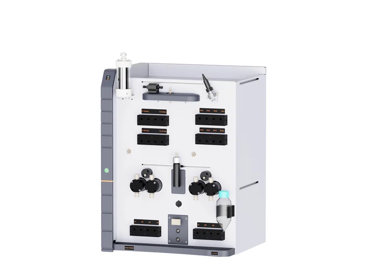
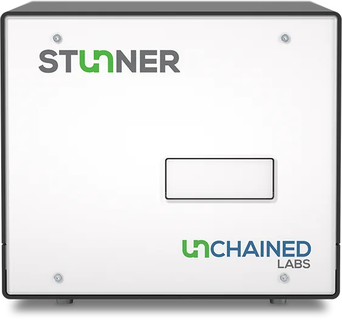
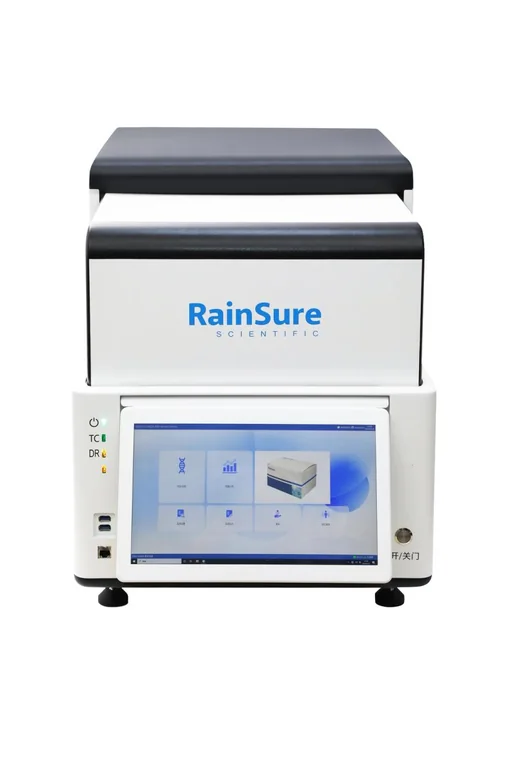
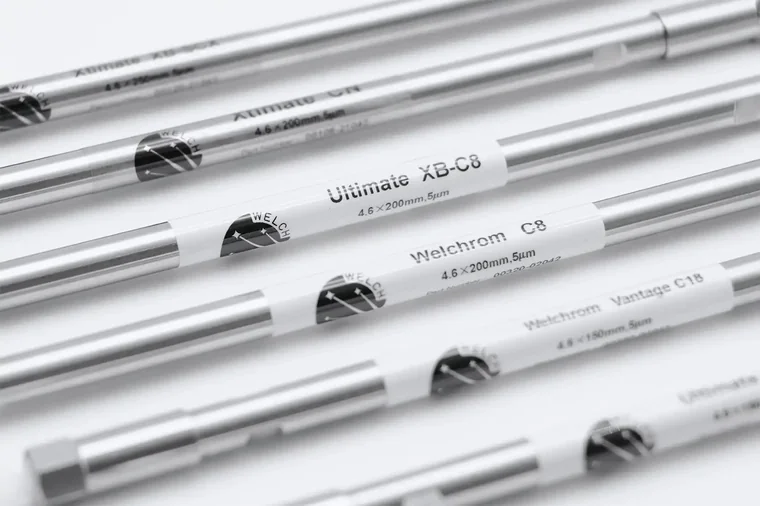
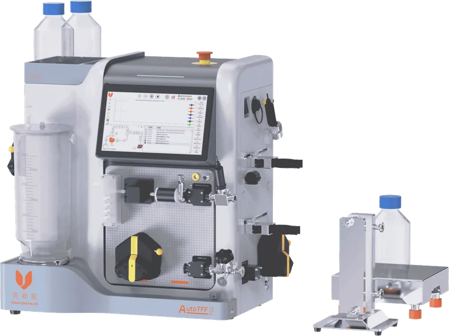
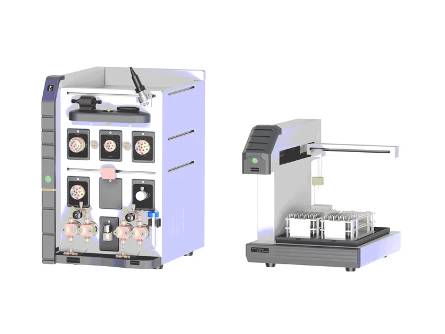
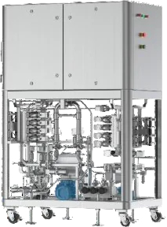
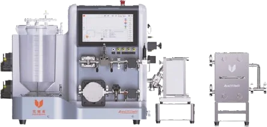

Products section: four options
Each one has a button that opens the product page. Tell me the letter you want.
APop-out cards + button under the grid
01 Our products
Technology for every stage of your work.
Chromatography, bioprocess and analytical systems from the manufacturers we represent.

InscinstechUnique AutoPureLab-scale protein purification system for biopharmaceutical R&D and small-batch work.View details
Unchained LabsStunnerPlate-based quantification and sizing that combines UV/Vis and DLS on the same sample.View details FlowCamFlowCam 8000Versatile flow imaging microscope that captures high-resolution particle images for size and shape analysis.View details
FlowCamFlowCam 8000Versatile flow imaging microscope that captures high-resolution particle images for size and shape analysis.View details 
RainSureRS32 All-in-One dPCR SystemCompact droplet digital PCR platform that combines sample preparation, amplification and analysis in one instrument.View details
Welch MaterialsHPLC ColumnsAnalytical HPLC columns across reversed-phase, normal-phase, SEC, ion-exchange and chiral chemistries.View details
InscinstechUnique AutoTFF075Automated lab-scale crossflow filtration platform for processing biological products.View detailsShowing 6 of 69 products from 6 partnersView all 69 products
BPartner tabs + sliding row, button in the header
01 Our products
Technology for every stage of your work.
Protein Purification (FPLC)Unique AutoPureLab-scale protein purification system for biopharmaceutical R&D and small-batch work.

Protein Purification (FPLC)Unique AutoPure Pilot600Benchtop pilot-scale chromatography system for process development and scale-up.
Protein Purification (FPLC)Unique AutoPure Process 180Production-scale chromatography system for small to mid-size batches.Tangential Flow FiltrationUnique AutoTFF075Automated lab-scale crossflow filtration platform for processing biological products.
Tangential Flow FiltrationUnique AutoTFF Pilot10Pilot-scale automated crossflow filtration system for process development.69products in the catalogueOpen product pageCOne featured product + quick list
01 Our products
Technology for every stage of your work.
Chromatography, bioprocess and analytical systems from the manufacturers we represent.

DDark band with big count
01 Our products
69 products.
Six global partners.
Chromatography, bioprocess and analytical systems, supplied and supported in India.
Browse the catalogue